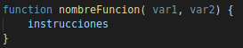
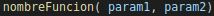
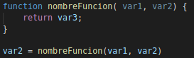

¿Que son las funciones?
La funciones son un conjunto de tareas que se ejecutan en un nuevo entorno (las variables que se declaren ahí se quedarán ahí)
Una función tendría este aspecto:
Para ejecutar la función nos basta con llamar a la función de esta manera:
Una función también puede devolver un valor con un return. Esto hará que la función devuelva un valor a terminar su ejecución. La forma de usar el return es esta:
